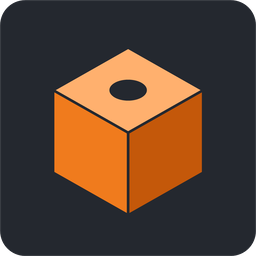
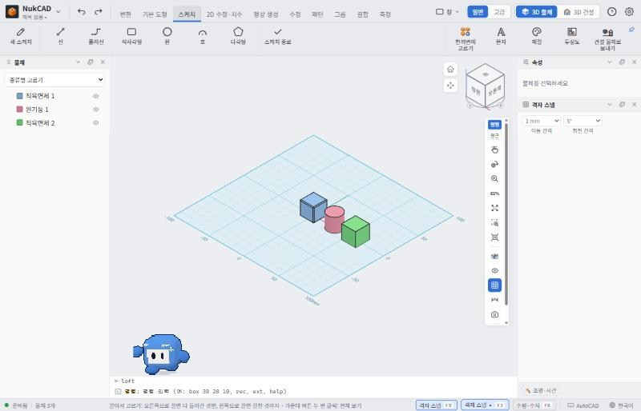

STUDENT 3D CAD

NukCAD
학생용 3D 물체·건설 모델링 프로그램
3D 프린트할 작은 물건부터 지도 위 건물까지, 쉬운 메뉴로 만들어 보세요.
간단한 사용법


- 처음 화면에서 3D 물체 모델링(작은 물건) 또는 3D 건설 모델링(지도 위 건물)을 골라요.
- 위 메뉴의 기본 도형·스케치 단추를 누르고 3D 화면을 클릭해 만들어요. 명령 창에
box 30 20 10처럼 쳐도 돼요. - 마우스: 왼쪽 클릭 고르기 · 가운데 끌기 화면 이동 · 오른쪽 끌기 회전 · 휠 확대·축소
- Ctrl+S 저장, Ctrl+Z 되돌리기. 3D 프린트는 왼쪽 위 NukCAD 단추 → 3D 내보내기 → STL.
- 잘 모르는 것이 있으면 아래쪽 명령 창 위의 도우미 Cadoo를 두 번 클릭해 물어보세요.
웹판과 설치판
웹판 — 설치 없이 바로 써요. 학교 PC나 다른 컴퓨터에서 빠르게 시작할 때 좋아요.
설치판 — 더 큰 AI 도우미 모델과 멘토에게 도움 요청 같은 수업 기능을 쓸 수 있어요.